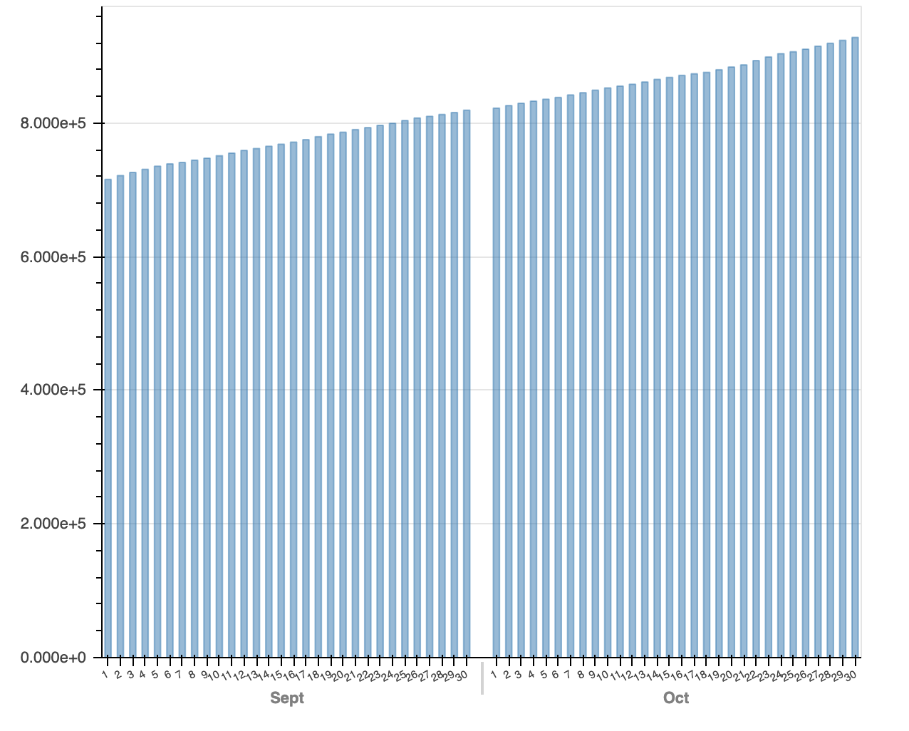
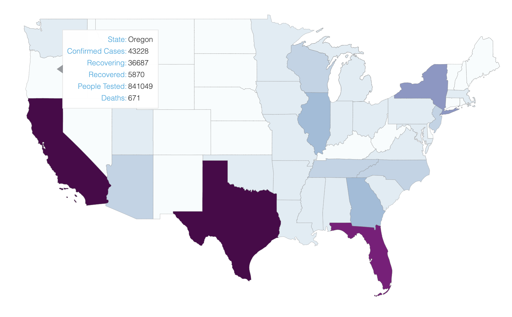

Welcome to the libraries lab! In this lab, we will introduce you to Bokeh, a well documented, versatile Python library for data visualization. It is great for making interactive graphics that can be easily integrated into a web application or dashboard.
We will walk you through how to visualize data with Bokeh, and by the end of this lab, you will have created these two visualizations below for COVID-19 data in the U.S.. The data we are using for this lab come from the COVID-19 Data Repository by the Center for Systems Science and Engineering (CSSE) at Johns Hopkins University. You can check out their repository here.
 Just like lab 17, we will be working in an iPython Notebook environment. So to get started with this lab:
lab18_bokeh.ipynb file to get started!
As we mentioned above, Bokeh can be easily intergated into an web application since it renders its plots with HTML and JavaScript. Therefore, although we are using an iPython Notebook for the pupose of this lab, you can actually directly output your plots as an HTML file. If you would like to explore Bokeh more on your own or try making a web application with it, here is a guide on how to install Bokeh on your local machine and output plots as HTML files. Please note that we still ask you to complete this lab in Jupyter!